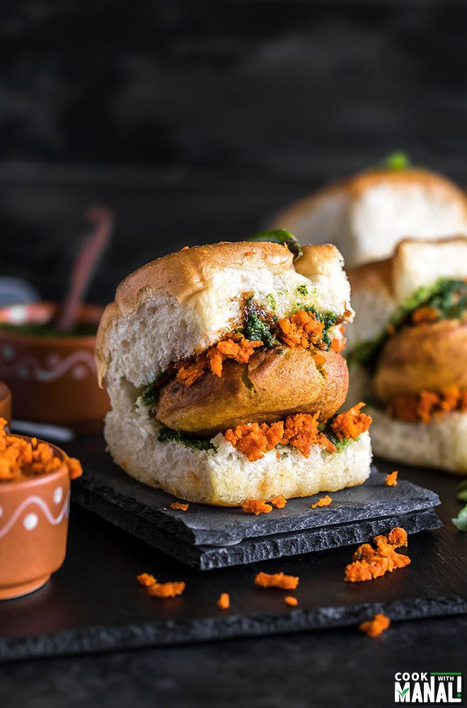

Ingredients for Vada Pav 🍔
- 4-5 Medium-sized Potatoes (boiled and mashed) 🥔
- 1 Onion (finely chopped) 🧅
- 2-3 Green Chilies (finely chopped) 🌶️
- 1 tsp Ginger-Garlic Paste 🧄
- 1/2 tsp Turmeric Powder ✨
- 1 tsp Red Chili Powder 🌶️
- 1 tsp Garam Masala 🌿
- 1 tbsp Lemon Juice 🍋
- 1 tbsp Fresh Coriander (chopped) 🌿
- 1/2 tsp Asafoetida (Hing) 🧂
- 1/2 tsp Mustard Seeds 🌱
- 2 tbsp Oil (for cooking the filling) 🍳
- Salt to taste 🧂
- 1/2 Cup Besan (Chickpea Flour) 🌾
- 1/4 tsp Baking Soda (optional, for crispiness) 🥄
- 1/2 Cup Rice Flour (optional, for extra crunch) 🌾
- Water (for making the batter) 💧
- 4 Pav Buns (or burger buns) 🍞
- Green Chutney (for serving) 🌿
- Sweet Tamarind Chutney (for serving) 🍯
Steps 🍴
- Begin by heating oil in a pan. Add mustard seeds and let them splutter. Add asafoetida (hing), chopped onions, and green chilies. Sauté for 2-3 minutes. 🌱🧅🌶️
- Add ginger-garlic paste and sauté for another 2 minutes until fragrant. 🧄
- Add turmeric powder, red chili powder, garam masala, and salt. Stir well. ✨🌶️🌿
- Add the boiled and mashed potatoes to the pan. Mix well and cook for 5-7 minutes, allowing the flavors to meld together. 🍋🌿
- Once the mixture is well-combined, remove it from the heat. Let it cool down for a few minutes, then shape it into small round balls (the size of a golf ball). 🥔
- In a bowl, prepare the batter for coating the vadas. Combine besan, rice flour (optional), baking soda (optional), and a pinch of salt. Add water gradually to make a smooth batter that’s thick enough to coat the vadas. 🌾💧
- Heat oil in a deep frying pan. Dip each potato ball (vada) into the batter, coating it completely. Then carefully drop it into the hot oil and fry until golden brown and crispy. Repeat for all the vadas. 🍳
- Slice the pav buns in half, but don’t cut them all the way through. You can lightly toast the buns in a little oil or butter if you prefer. 🍞
- To assemble the Vada Pav: Spread a little green chutney and tamarind chutney on the pav. Place a hot vada inside and press gently to flatten. 🍯🌿
- Serve the Vada Pav hot with extra chutneys and fried green chilies on the side. 🌶️